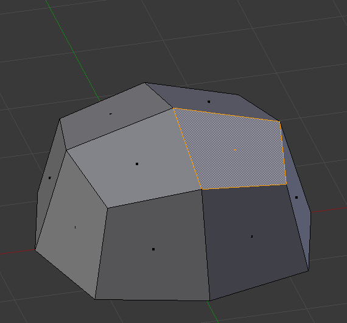
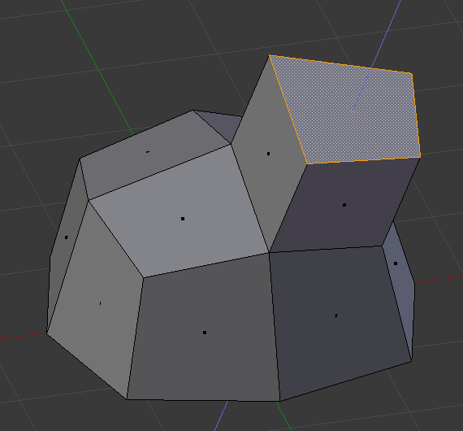

Lesson 4: Extrude
Goal: Pull a flat face out into 3D with E. Then make a raised name tag.
What extrude does
Extrude copies a selected face and pulls the copy away from the surface. Blender builds new side walls for you. It is the most-used modeling tool.

Before: the top face is selected.

After: the selected face is pulled out, and new faces fill the gap. The manual uses a different shape, but the steps are the same.
Image: Blender Manual by the Blender Documentation Team, licensed under CC BY-SA 4.0. Shared unchanged.
Steps
- Tool Select the cube and press Tab for Edit Mode.
- Key Press 3 for face select.
- Mouse Click the top face. It turns orange.
- Key Press E, move the mouse up, and click. The top is now a raised block.
- Check You see a tall block. The new side walls are visible.
- Key Press Cmd + Z to undo.
- Key Press I to inset. A smaller face appears inside the first. Move the mouse and click.
- Key Press E again and move up. You now have a raised frame.
- Key Press Tab to leave Edit Mode.
Repeat trick: press Shift + R to repeat your last action. Great for stepped shapes. unverified on your Mac keyboard
Project: raised name tag
A flat plate with a raised center panel and a border. The colors are for later lessons.
- Tool Add a cube: Shift + A, then Mesh > Cube.
- Key Press S, X, type 2, Enter to make it wider.
- Key Press S, Y, type 0.5, Enter to make it a flat plate.
- Key Press Tab, then 3 for face select.
- Mouse Click the top face.
- Key Press I, move the mouse slightly, and click. This makes a border.
- Key Press E, move up a little, click. The center panel rises.
- Key Press Tab to leave Edit Mode. Save as
nametag.blendwith Cmd + S.
You are done when: